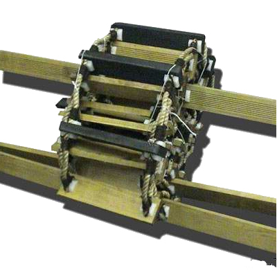
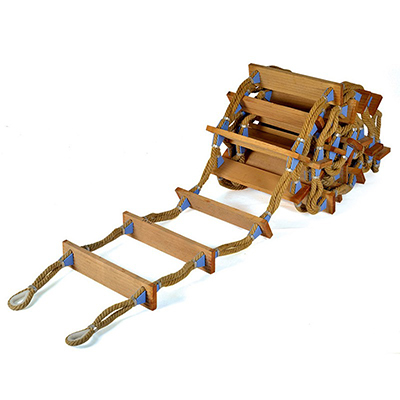
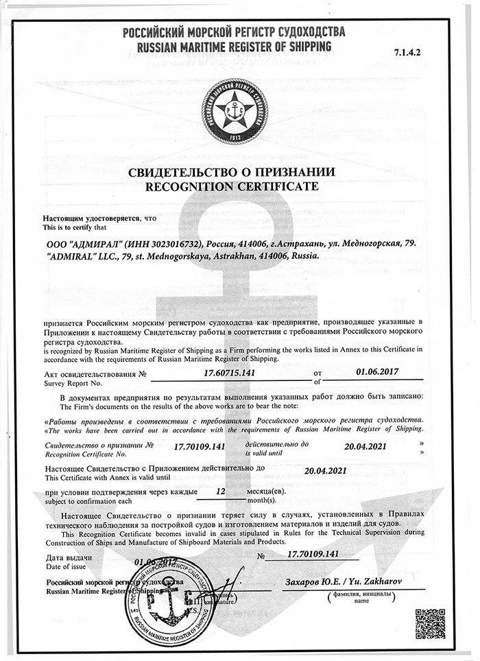
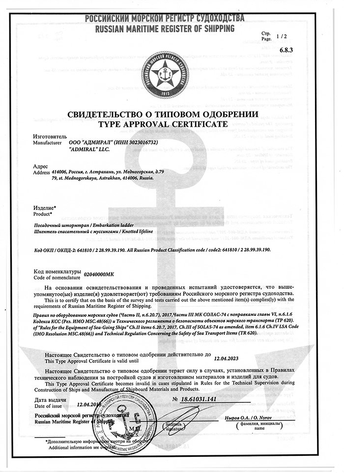
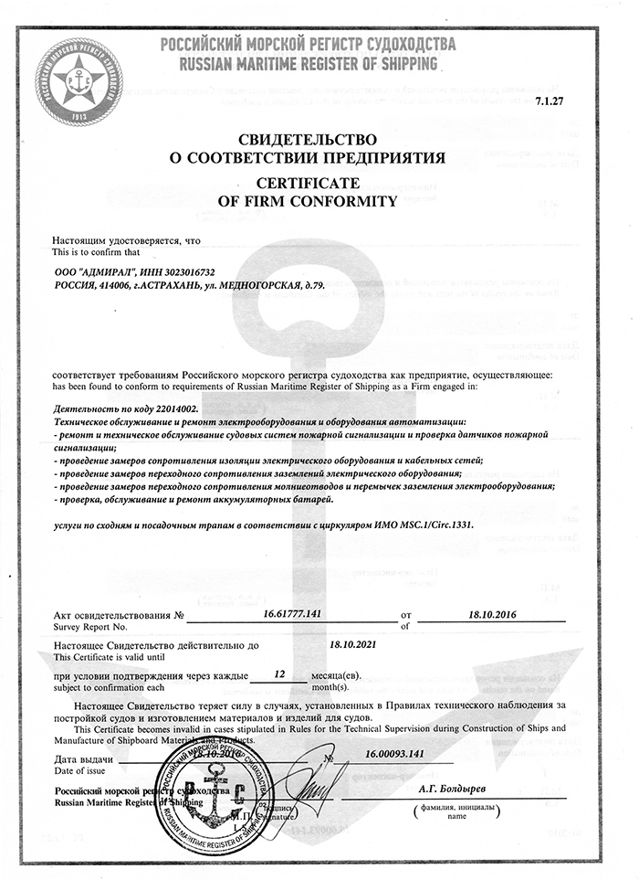
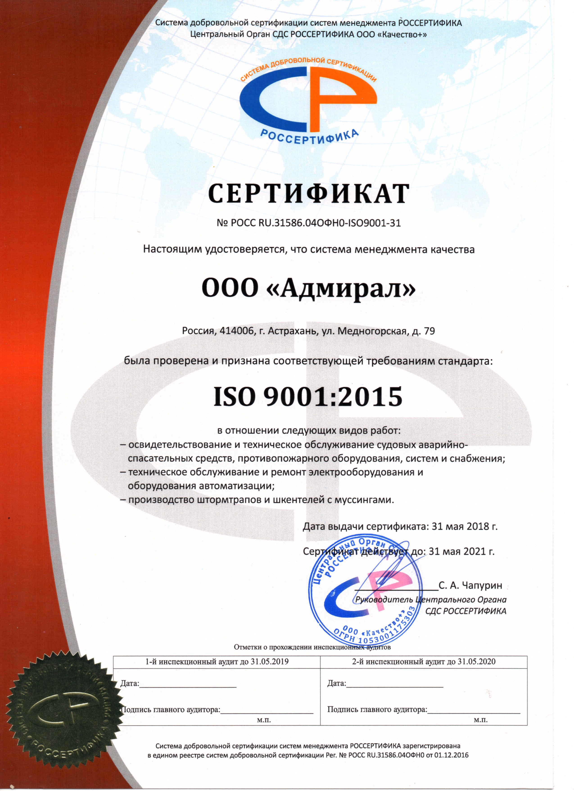

Российским Морским Регистром Судоходства
Соответствует требованиям Российского морского регистра как предприятие, осуществлябщее: Деятельность по коду 22014002
Посадочный штормтран, Шкентель спасательный с муссингами. Соответствуют требованиям РМРС
Система менеджмента качества была проверена и признана соответствующей требованиям стандарта ISO 9001:2015
Лоцманский штормтрап — устройство для передвижения лоцмана на борт судна и обратно и предназначен для обеспечения безопасной посадки и высадки лоцманов. Лоцманские штормтрапы изготавливаются в соответствии с требованиями МК СОЛАС 74 с поправками, кодекса ЛСА и в соответствии с требованиями Правил классификации и постройки морских судов Российского Морского Регистра Судоходства. Стандартная длина лоцманского штормтрапа от 3 до 28 метров. Любые другие размеры штормтрапа могут быть выполнены под заказ. Лоцманский штормтрап поставляется с сертификатом Морского регистра судоходства. Предлагаем к поставке: ШТОРМТРАП посадочный
Посадочный штормтрап– устройство для посадки людей в шлюпки (катера) и высадке из них на борт судна и обратно во время рейдовых стоянок, а также при выполнении различных забортных работ (окраске борта, очистке якоря, шпигатов, осмотре сварных швов и т.п.). Посадочные штормтрапы изготавливаются в соответствии с требованиями МК СОЛАС 74 с поправками, кодекса ЛСА и в соответствии с требованиями Правил классификации и постройки морских судов Российского Морского Регистра Судоходства. Стандартная длина посадочного штормтрапа от 3 до 28 метров. Любые другие размеры штормтрапа могут быть выполнены под заказ. Штормтрап посадочный изготавливается из высококачественных материалов и поставляется с сертификатом морского регистра судоходства
ООО "АДМИРАЛ" Вид деятельности: Изготовление штормтрапов и шкентелей с муссингамис. ООО "АДМИРАЛ" признается Российским морским регистром судоходства как предприятие, производящее «Посадочный штормтрап», «Шкентель спасательный с муссингами». На основании освидетельствования и проведенных испытаний удостоверятся, что вышеупомянутые изделия удовлетворяют требованиям Российского морского судоходства. Свидетельство о типовом одобрении №18.61031.141 от 12.04.2018 действующее до 12.04.2023 г. ООО "АДМИРАЛ" признается Российским морским регистром судоходства как предприятие, осуществляющее деятельность по коду 22014002 Техническое обслуживание и ремонт электрооборудования и оборудования автоматизации: - ремонт и техническое обслуживание судовых систем пожарной сигнализации и проверка датчиков пожарной сигнализации; -проведение замеров сопротивления изоляции электрического оборудования и кабельных сетей; - проведение замеров переходного сопротивления заземлений электрического оборудования,- - проведение замеров переходного сопротивления молниеотводов и перемычек заземления электрооборудования; - проверка, обслуживание и ремонт аккумуляторных батарей. услуги по сходням и посадочным тропам в соответствии с циркуляром ИМО MSC.1/Сігс.1331. Акт освидетельствования №16.61777.141 от 18.10.2016, свидетельство действительно до 18.10.2021г.
 
 